OMERO Workshop
Overview of OMERO

OMERO is a software platform for visualizing, managing, and annotating scientific image data. OMERO lets you import and archive your images, annotate and tag them, record your experimental protocols, and export images in a number of formats. It also allows you to collaborate with colleagues by creating user groups with different permission levels. Finally, it provides a convenient interface for programmatic access to your image data.
OMERO.web is a web-based interface that provides most of the core OMERO functions described above. You can explore the public JAX instance of OMERO.web at images.jax.org, where we have made some data publicly available. Note that this website is just a viewer for our public data and will not allow you to log in.
OMERO instances at JAX are hosted by Research IT for JAX research labs.
Where does OMERO fit into the JAX image data ecosystem?
Importing images into OMERO is as simple as requesting access and uploading images to our automated import folders.
Both the microscopy delivery folders and the OMERO import folders (jax/omero_drop/dropbox) are accessible via Globus for quick transfers
Images in OMERO can be directly accessed via other analysis platforms such as QuPATH, ImageJ/Fiji, and Python. In Day 2, we will walk through an example workflow using Fiji.
Other resources
Day 1: Viewing images in OMERO.web
Browsing images
- Login to the webclient at http://ctomeroweb01.jax.org/ with the Username and Password provided.
- Browse hierarchy of Project “Training Data” and Dataset “siRNAi-HeLa” to find images. Several control images in the Dataset have “scram” in their name. Other images are named with siRNAi targets “IN” for INCENP and other names for minor INCENP variants.

- Zoom the thumbnails using the slider below thumbnails.
- Use Shift+click or Ctrl+click to select multiple thumbnails that appear to be in Metaphase (one or two single lines appear in each cell as opposed to round blobs):
Tag annotations
- In the right-hand panel, expand the Tags pane and click on the button to add tags to all the selected images.
- Create a new tag at the bottom of the pop-up window. First, create a “Metaphase” tag. Then, create a tag that is unique to you (but others in this training will see). Click Save.
- Re-click the plus button to add new tags, and you should see everyone’s tags in the Available Tags list. Pick one you like, and click on the button to move it into the right-hand list then click “Save”.
- Click the newly-added Metaphase Tag: in the right-hand panel. This will browse by Tags to show all Images with this Tag, be those your images or images of your colleagues.
- Notice at the top-left of the page that we are now browsing data belonging to Trainer-1, the owner of the Metaphase tag.
- You can also search for the tag using the search bar on the top right of the screen. By default, it will look for images that belong to you, but you can change the scope of that on the left-hand side of the search screen:
Key-Value pair annotations
- In the right-hand panel, expand the Key-Value Pairs pane and start typing in the “Add Key” and “Add Value” text boxes to add key-value annotation pairs. For example, make a key “species” and value “mouse”. Find another image and label it with key “species” and value “human”.
- In the search bar on the top right of the screen, enter “species”. This should pull up both images you have labeled with key-value pairs. Now try searching for “species:mouse”. This should find only the image you labeled with the value of “mouse”.
Filtering images
- Click Browse for one of the images in the table to return to the Dataset. At this point, make sure you are looking at your own images; check the top left corner of the screen. If you are not, click that bar and navigate back to your user:
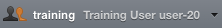
- Above the thumbnails, click Add Filter > Name and enter “scram” to filter for all control images in this RNAi experiment.
Preview viewer
- Select an image, click the Preview tab of the right panel and Turn off channels 1 and 4 by clicking on the blue and red buttons.
- Adjust the intensity levels of the green channel which is INCENP, and channel 3 which is Aurora-B. You can use the Histogram feature to help you with the adjustments.
Bulk saving rendering settings
- We want to compare levels of these targets across all images in the Dataset. Click Save to All.
- Thumbnails will be updated with new rendering settings, allowing comparison across the Dataset. Thumbnails can be zoomed using the slider below.
- In the left panel hierarchy, right-click on the siRNAi-HeLa Dataset and choose Rendering Settings… > Set Imported and Save to return to original settings.
Ratings
- Filter images by Name “VRAQ D3D” and select the first image “VRAQ_01.r3d_D3D.dv”.
- In the General tab of the right-hand panel, expand the Ratings panel and click the stars to give this image a rating of 5.
- Filter images by Name “IN 02 D3D”, select the first image “IN_02.r3d_D3D.dv” and add a rating of 5.
Time for a break!
OMERO.iviewer
- Now, clear the filtering by Name and instead, filter images by Rating of 5 to show only the 2 images we have just rated.
- Select both images, right click on the selected images in the tree and choose Open with… > OMERO.iviewer. You can also find the Open with option at the top of the right panel.
- Click the Crosshairs icon at the top-right of the viewer to enable the pixel intensity display for the mouse pointer. Then mouse over the Image to see the pixel intensities for the channels turned on.
- Our goal with this image is to measure the distance between centromeres, stained with ACA in the 4th Channel. Turn on ONLY the 4th channel and open the ROIs tab to the right.
Drawing ROIs in OMERO.iviewer
- Select the Line tool and draw a line between the centers of centromere pairs. In the ROIs table, click the 3 dots in the column header and choose to Show Area/Length. Click Save to Save ROIs.
- You can also use Z-Projection ( at the bottom left) which might help find outlying centromeres. Note that Z-Projection may not work for images with very large stacks!
- Once done with drawing ROIs, click Save again. This is important to not lose your work and also to export intensities in the next few steps.
- Click on the Select tool:
- To export statistics, we first need to select all the ROIs using ctrl+drag (cmd+drag on a Mac) to select a region in the viewer (if ROIs are spread across multiple Z-sections, we can show them all at once using Z-projection). The selected ROIs will be highlighted blue on the image.
Export ROI statistics
- To export lengths and intensities of ONLY the 3rd channel (Aurora-B) turn on only this channel on the Settings tab of the right-hand panel.
- Export the Intensities, areas and line lengths into Excel. Select in the top-left corner ROIs > Export as Table. This will export the values from the selected ROIs.
- Open the downloaded table in Excel or similar tool to see the lengths and intensity measurements for the ROIs.
OMERO.figure
- Back in the webclient window, select both 5-rated (VRAQ_01.r3d_D3D.dv and IN_02.r3d_D3D.dv), right-click them (on the left-side file list) and select Open with… -> OMERO.figure.
- Change the paper orientation to horizontal in File > Paper Setup.
Making a grid in OMERO.figure
- Drag the images to place one above the other, select both and click the Grid layout button . Resize to make the figure smaller. Copy both images and paste twice to make a grid with 2 rows with 3 columns.
- Select both panels from each column in turn and toggle on a different channel for each column. Select all panels and try different Z indices and Z-projections.
Add labels to figure
- Select the 2 panels in the left column, click on the Labels tab in the right panel and under Add Labels choose [image-name] from the drop-down menu. Click on the position chooser and choose “Left Vertical” from the options. Click Add.

Exporting figures
- Click Export PDF and then when complete, click the Download button. Open the downloaded pdf in any suitable program and find the second page of the pdf. Click on the link to the image and see that you are navigated back to OMERO in your browser and the appropriate image, which was used in the Figure, is highlighted.
Viewing other users’ figures
- Save the figure and see that the URL updates to a new URL for this figure which can be shared with colleagues. File > Open can be used to open your own figures or those of colleagues.
- Click File > Open, then click on the Owner button to select a figure of other users (your colleagues). Select and open other users’ figures and study them.
- With another user’s figure open, select File > Save a Copy to save your own copy of your colleague’s figure. Note that you cannot directly save changes on their figure.
Homework for Day 2: Make sure you can run Fiji
- Start the Fiji app and use the OMERO plugin to browse data in OMERO i.e. Plugins > OMERO > Connect To OMERO
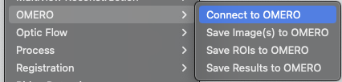
- In the OMERO login dialog, click the wrench icon and then add the server address (ctomerodev.jax.org – NOTE THIS IS A DIFFERENT ADDRESS!) in the dialog. Click Apply. Now, log in with the provided details (the same you have been using for the webpage).
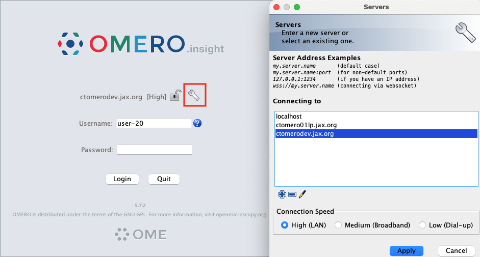
- Find and open any image (double-click the thumbnail) to make sure things work!
Day 2: Analysis of OMERO images using Fiji
Data management in OMERO
For this workshop, images have already been imported into OMERO. JAX uses a “dropbox” approach to importing images to OMERO; please contact us if your group wants to start using it and we will walk you through the process.
- Login to the webclient at http://ctomeroweb01.jax.org/ with the Username and Password provided.
- Search for mitomycin-A in the Search field at the top right of webclient. This should find 32 images. To search for key-value pairs, we can use the search string key:value. To narrow down the search, search again for mitomycin-A:10microM. This should narrow it down to 8 images. find the “C4.pattern.tif” image in the Dataset “chromatin-condensation”. Click on Browse to get back to this image in webclient.
- Adjust channel names: Click on the pen icon in the right-hand pane next to Channels. Input “Cy3” (instead of channel “0”) and “eGFP” (instead of channel “1”). Click Apply to all button and confirm by clicking Continue.
- Open the “C4.pattern.tif” Image with OMERO.iviewer, use the Time-slider below the image to move through time and play the video.
Connect Fiji to OMERO
- Start the Fiji app and use the OMERO plugin to browse data in OMERO i.e. Plugins > OMERO > Connect To OMERO
- In the OMERO login dialog, click the wrench icon and then add the server address (ctomerodev.jax.org – NOTE THIS IS A DIFFERENT ADDRESS!) in the dialog. Click Apply.
- Find and open the same image from above “C4.pattern.tif” from Dataset “chromatin-condensation” (double-click on the thumbnail).
Threshold foreground
Before starting the image segmentation workflow, check that Process > Binary > Options has Black background checked.
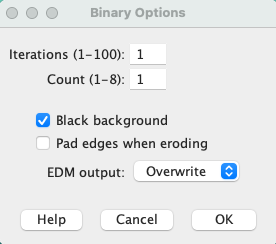
- Click on the panel with the image. Select Image > Adjust > Threshold
- The Threshold dialog will pop up, click Apply.
- Another window Convert Stack to Binary will pop up 11. Select the following parameters:
- Method: Default, Background: Dark, Calculate threshold for each Image and Black background (of binary masks).
- Click OK.
- Close the Threshold dialog if you want
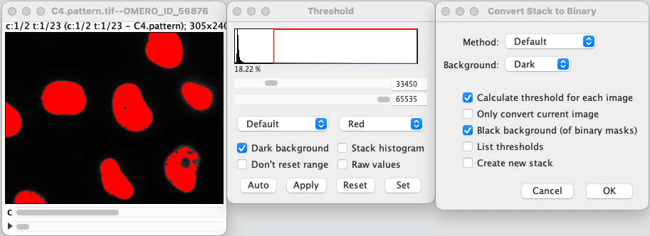
Identify cells
- Select Analyze > Analyze Particles
- In the Analyze Particles dialog, select the following parameters
- with Size: 50-infinity
- Show: Outlines
- Check: Display results, Clear results, Summarize and Add to Manager.
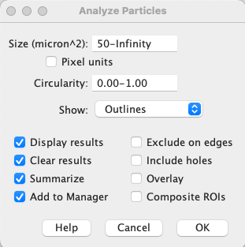
- Click OK.
- A dialog pops up asking to Process all 46 images? Click Yes
- ROIs, Results table, and the mask timelapse with outlines will be generated
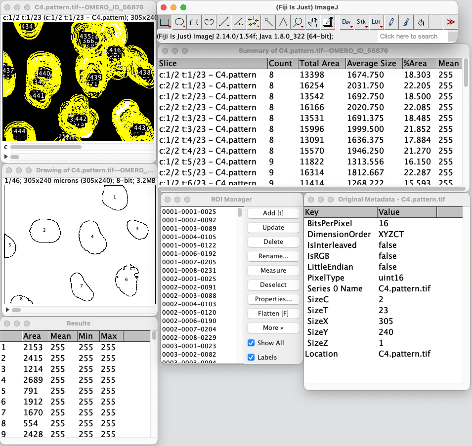
- Select the Results table and Menu Results > Distribution > OK
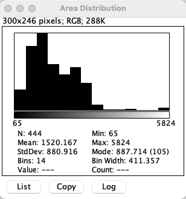
Save cell ROIs back to OMERO
- In Fiji, select the original image (now also showing ROIs). You might need to do some digging through the sea of new windows you have. Then, select Plugins > OMERO > Save ROIs to OMERO.
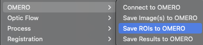
- We want to Save ROI and Measurements, which will attach the results as a CSV attachment (to open for example in Excel) to the image in OMERO.
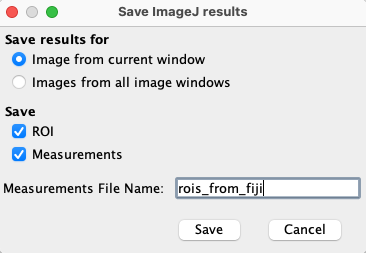
- Enter a File Name and click Save (Note: There is also a manual workflow which you could have used to attach the Excel sheets resulting from Workflow1 to OMERO.)
Save result images back to OMERO
- Select the image with outlines named “Drawing of…”. Select File > Save As > Tiff… and give it a meaningful name (outlines.tiff, for example).
- Now we will save the created images back to OMERO. select Plugins > OMERO > Save Image(s) to OMERO.
- You can now select in which project and dataset the new images are going to be imported into on the left-hand side. In this case, put them in your “Training Data” project and “chromatin-condensation” dataset.
- When you are done selecting project and dataset, check Add Images from all image windows. Click Add to Queue then Import.
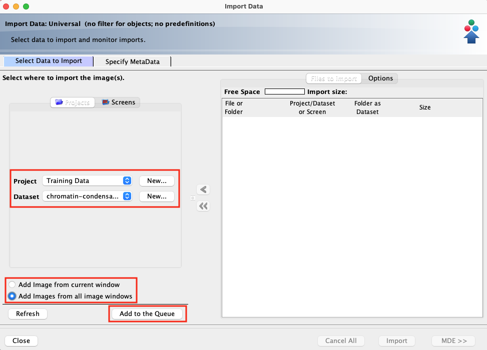
- Return to the webclient and check that the new images have been placed in the correct project and dataset (you might need to press the refresh button on the top left). After that, open the original image in OMERO.iviewer and inspect the newly created ROIs. Notice that you have ROIs for each channel on all timeplanes.
- We will not need Fiji any longer, so you can go ahead and close it if you want.
Time for a break!
Display Fiji results in OMERO.figure
- Select the original C4.pattern.tif image, the ROIs image and distribution plot. Click on Open with… OMERO.figure.
- Copy and paste the original image using the Edit menu or keyboard shortcuts to duplicate it.
- Adjust the rendering settings in this image in the right panel, to turn off the Green channel and enhance the Red.
- Arrange these 2 images in a column with the ROIs image below, resizing as needed.
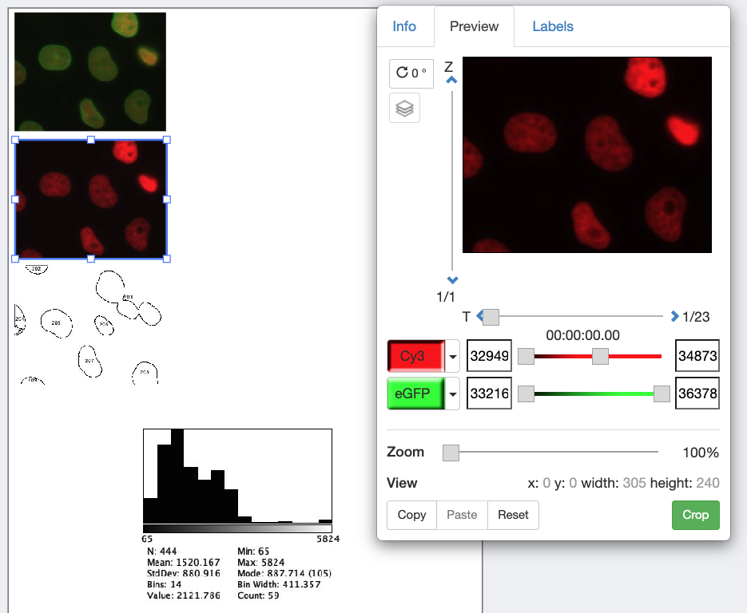
- Select the 3 panels and use the Align Sizes > Width & Height toolbar to ensure these panels are all the same size.
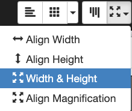
- Then click the Grid layout button in the same toolbar to snap the panels to a grid.
- Copy the 3 panels and paste several times to create 3 new columns of 3 panels.
- Select just the upper 2 image panels from each new column in turn and in the right panel, drag the T-slider to set the time to index, e.g. 5 (20 mins), then 6 (25 mins) then 9 (40 mins).
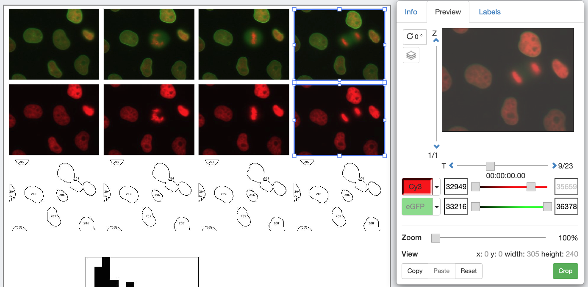
- The ROIs image got imported from Fiji Z-stack combining channels and times, so we have to choose the frame using the Z-slider. There are 46 planes in the Z stack, from 2 channels x 23 time points. To pick time-frames in the red channel that correspond to the 4 images above, set the Z-index for the 4 ROI images to 1, 9, 11 and 17 respectively.
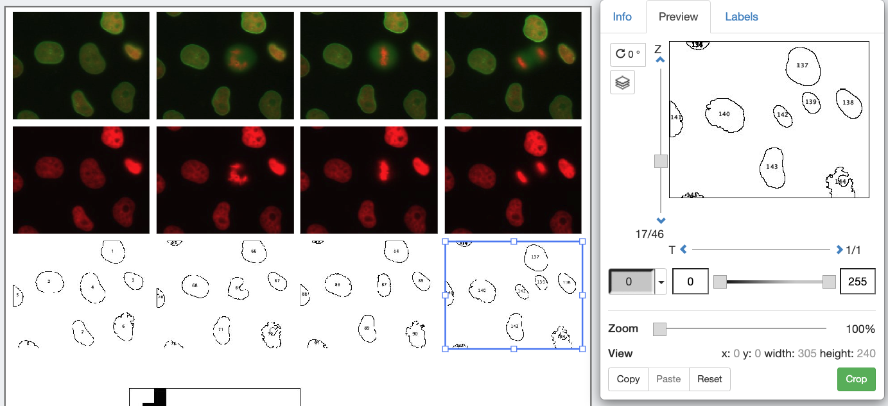
- Select all the 12 panels in the grid and use the Zoom slider to zoom in.
- Pan the images by dragging in the right-hand panel Preview image.
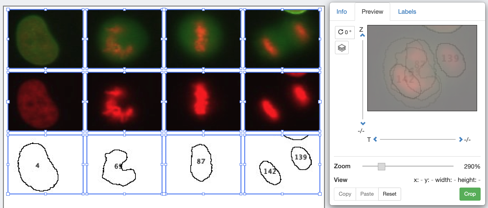
- Select just the first row of images, click on the Labels tab in the right-hand panel. Under Add Labels choose Time (T-Index) from the drop-down menu. Choose label color (white), position (top-left) and font-size (12) then click Add.
- Click Save to save your figure.
- To export your figure as PDF, click the Export PDF button at the top-right of the screen and wait for the PDF to be created on the server and the Download button to appear. Click to download the PDF and import to a PDF editor. You can post-process the PDF in Inkscape or Adobe Illustrator/Photoshop for example.
Fill out the workshop feedback survey
Please let us know how you liked the pace and content of the workshop, so we can make it better in the future!